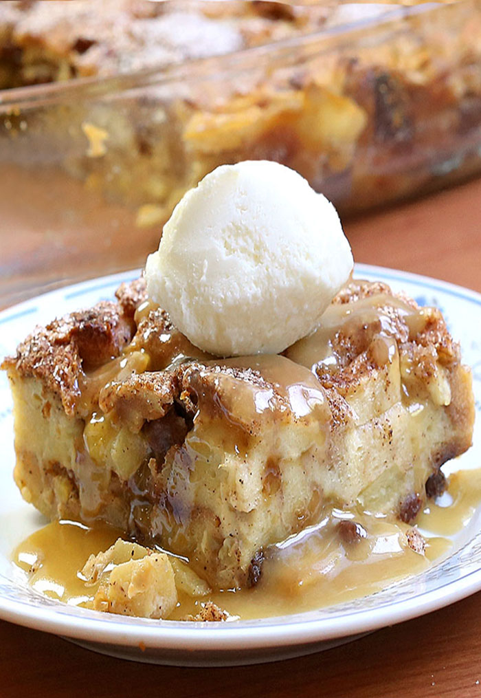

BREAD PUDDING

A delicious dessert made from ingredients you probably already have at home.
I love this recipe because it's easy and frugal - you most likely already have the ingredients
your pantry. It's a great way to use up older stale bread and it tastes delicious too. Eat it as
dessert or breakfast or a snack!
I think it tastes the best when you use a soft bread. Stale hot dog or hamburger buns do great
in this recipe and the best part is there is zero waste. I hope really hope you enjoy this recipe!
Ingredients
- 6 slices of old bread, torn into pieces
- 2 tablespoons of unsalted butter (melted)
- 1/2 cup raisins (optional)
- 2 cups milk
- 3/4 cups white sugar
- 4 large eggs, beaten
- 1 teaspoon cinnamon
- 1 teaspoon vanilla extract
Steps
- Preheat the oven to 350 degrees F (175 degrees C).
- Place bread pieces into an 8-inch square baking pan. Drizzle melted butter over bread
and sprinkle raisins over top.
- Whisk milk, sugar, eggs, cinnamon, and vanilla together in a medium mixing bowl until
well combined.
- Pour mixture over bread, and lightly push down with a fork until all bread is covered and soaking up the liquid.
- Bake in the preheated oven until golden brown and the top springs back when lightly pressed,
about 45 minutes.